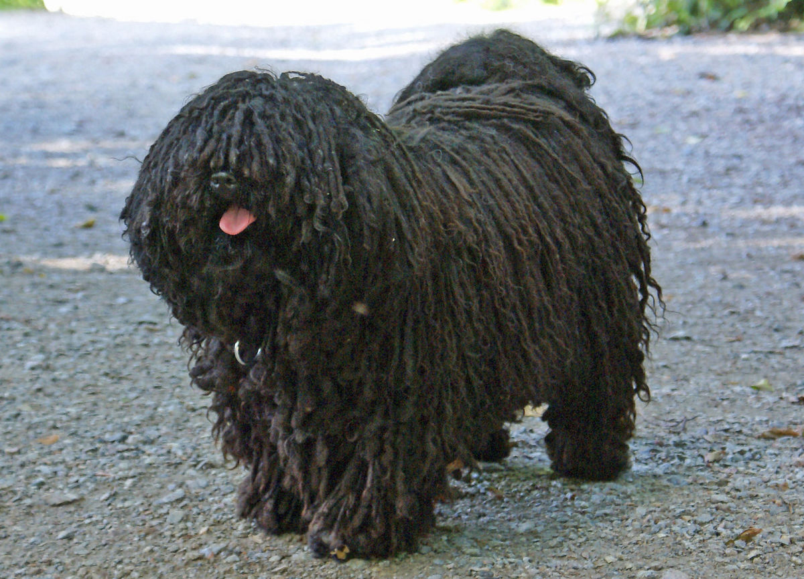

Anyone owns this huskey?
by Marianne C.
Found this lost Husky in front of my house. Whoever owns this adorable furball message me ASAP!!!
Owner you better reply to me soon OR ELSE I will really end up keeping him:>
I think I'll name him Snow


HELP: Find Loud Chihuahua
by JustJake
I lost my Chihuahua in BGC, he should be there somewhere.
He is teacup sized and really LOUD (as in really loud). If you see a loud chihuahua barking that's probably mine.
Please reply to this thread if you see him.
317
44
#lost
#dog
#chihuahua

Finding a Black Dog with long hair
by Danica Lee
Finding for my black dog that ran away from home. Please reply if you saw her.
She's kinda impossible to not spot because she sticks out like a sore thumb. Refer to the picture here.
Message here as soon as you guys spot her.
162
29
#lost
#dog
#hariydog

Mint has been returned!
by PawPaw
First of all thank you @koolkid for returning my cat back to me, but I don't
appreciate that you kept him for 3 months before you gave my cat back. Still,
thanks for finding my cat and for feeding him.
288
73
#found
#cat
#returned